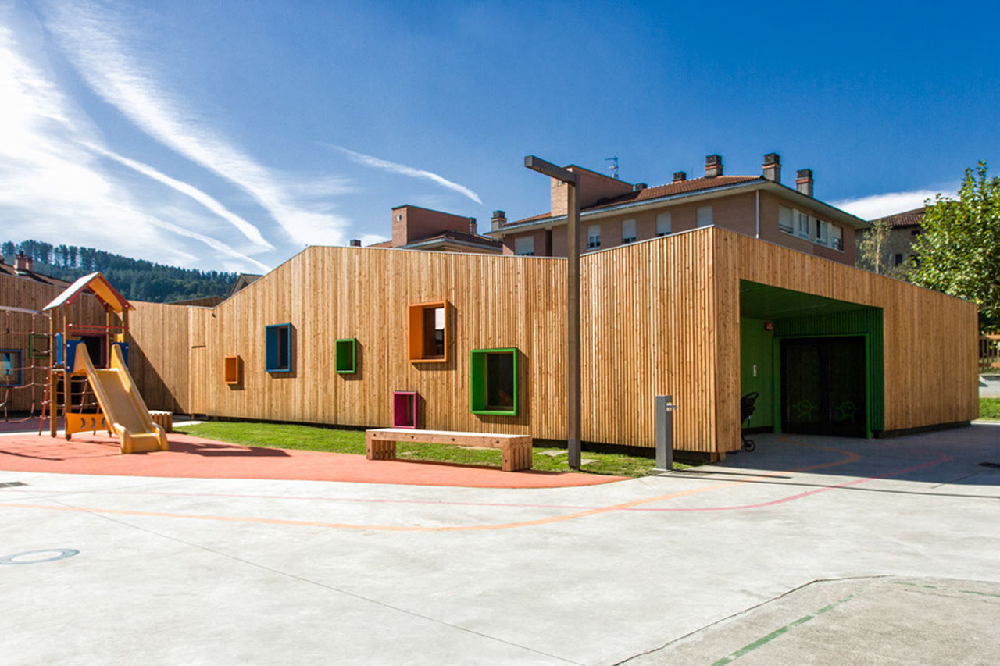
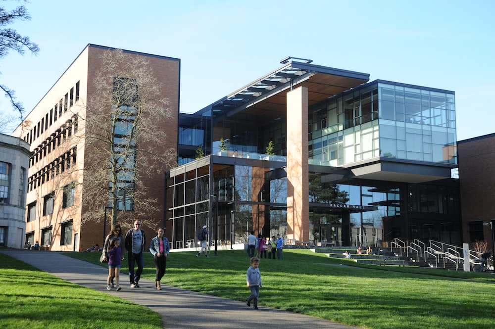
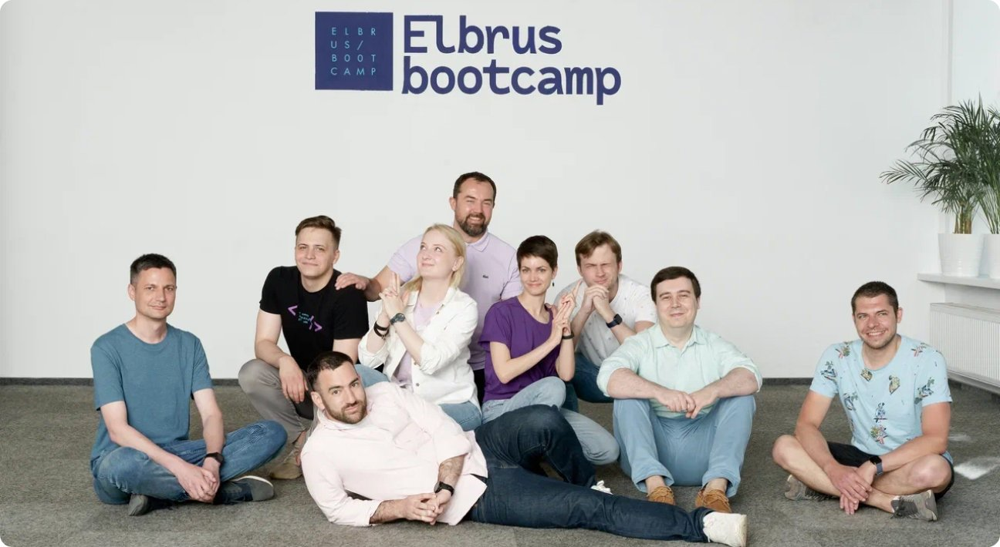

|  |
KindergardenMy autobiography includes the wonderful years in kindergarten, where I was first introduced to friendship, play and learning. This period of my life has left unforgettable memories in my heart. |

|
SchoolTime at school was a new stage of my life. I was immersed in a world of knowledge, friendship and self-discovery. Lessons, sports, evening activities - all this inspired me to new achievements and shaped my personality. School became the foundation for my future. |
|  |
UniversityUniversity has opened up new horizons of knowledge and opportunities for me. I immersed myself in the study of my specialty, made precious friendships and broadened my horizons. University years became a time of self-determination and preparation for my future career. |
|  |
Elbrus BootcampNow I am already a student of elbrus bootcamp. I have passed the technical interview and started the distant learning in phase 0. I have a lot of challenges and discoveries in front of me, but I think it is worth it. |
Paramonov Gleb NikolaevichStudent of Phase 0 at Elbrus BootCamp |